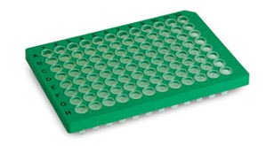

Exercises 8
Putting it all together
For the next two classes we’ll combine everything we’ve learned to process and visualize data from some some biological experiments. These exercises will illustrate a complete analysis pipeline – from data tidying to manipulation and visualization – using tools from the tidyverse.

Libraries
Load the libraries you need for analysis below.
A quantitative PCR experiment
Here is the experimental setup:
Two cell lines (
wtandmut) were treated with a drug that induces interferon expressionAfter specific time points, cells were harvested and actin and interferon mRNA were analyzed by quantitative PCR (with 3 technical replicates), with a control containing no reverse transcriptase.
Load the data
These data are in two TSV files:
data/qpcr_names.tsv.gzdata/qpcr_data.tsv.gz
Load these data sets and inspect.
Rows: 8 Columns: 13
── Column specification ────────────────────────────────────────────────────────
Delimiter: "\t"
chr (13): row, 1, 2, 3, 4, 5, 6, 7, 8, 9, 10, 11, 12
ℹ Use `spec()` to retrieve the full column specification for this data.
ℹ Specify the column types or set `show_col_types = FALSE` to quiet this message.Rows: 8 Columns: 13
── Column specification ────────────────────────────────────────────────────────
Delimiter: "\t"
chr (1): row
dbl (12): 1, 2, 3, 4, 5, 6, 7, 8, 9, 10, 11, 12
ℹ Use `spec()` to retrieve the full column specification for this data.
ℹ Specify the column types or set `show_col_types = FALSE` to quiet this message.Note the shape of the data and the names of the rows and columns. Do they remind you of anything?

Tidy the data
Given the experimental setup and the shape of the tibbles, you should be able to answer: Are these data tidy?
- What are the variables in the data?
- Are the variables the column names?
qpcr_data_long <-
pivot_longer(qpcr_data, -row, names_to = "col")
qpcr_names_long <-
pivot_longer(qpcr_names, -row, names_to = "col") |>
separate(
value,
into = c("gt", "time", "gene", "rt", "rep"),
sep = "_"
)Merge the data
Note the structure of the tidied data. What columns (variables) are shared by both tibbles?
How we can join the data from these two tibbles, linking the sample identifiers with their gene expression values?
Summarize the data
Calculate the mean and standard deviation across replicates.
Do this two ways:
- Calculate the statistics for each gene separately.
- Calculate a ratio of interferon to actin levels for each sample before calculating the mean and standard deviation of the ratios.
Plot the data
Now we can plot the summary statistics. We’ll use ggplot2::geom_pointrange() to represent the mean and standard deviation.
You’ll need to fill in the blanks (___) below.
ggplot(
qpcr_summary,
aes(
x = ___,
y = ___,
color = ___
),
) +
geom_pointrange(
aes(
ymin = ___,
ymax = ___
),
# position = ___
)Inspect the above plot. How might you improve it?
Copy the above chunk and add functions that modify the plot’s look and feel.
- Facet the plot to see differences between the genotypes.
- Update the theme using
cowplot. - Update the x, y, and title labels (
ggplot2::labs()). - Update the colors with a nicer palette (
ggplot2::scale_*). - Fix the position of the geoms by updating their
positionaesthetic.
Interpret the plot
- What can you say about the expression of ACTIN and IFN?
- What can you say about the mutant and wild-type cells?